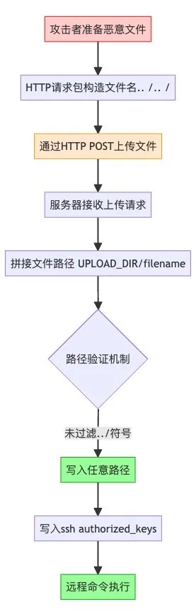

腾讯安全应急响应中心DeepSeek本地化部署有风险！快来看看你中招了吗？
Ollama
Ollama默认启动时会开放11434端口，在此端口上公开使用restful api执行核心功能，例如下载模型，上传模型，模型对话等等。默认情况下Ollama只会在本地开放端口，但是在Ollama的Docker中，默认会以root权限启动，并且开放到公网上
Ollama对这些接口普遍没有鉴权，导致攻击者扫描到这些Ollama的开放服务后可以进行一系列攻击手段：
- 模型删除
例如，通过接口删除模型
- 模型窃取
通过接口查看Ollama模型
Ollama支持自定义镜像源，自建一个镜像服务器，再通过接口就能轻松窃取私有模型文件
- 算力窃取
通过接口查看Ollama模型。之后便能用请求对话，窃取了目标机器的算力
- 模型投毒
可以通过接口查看正在运行的模型，接着可以用下载有毒的模型，通过删除正常模型，在通过接口迁移有毒模型到正常模型路径，通过有毒模型污染使用者的对话
- 远程命令执行漏洞CVE-2024-37032
CVE-2024-37032是Ollama开源框架中一个严重的路径遍历漏洞，允许远程代码执行（RCE），CVSSv3评分为9.1。该漏洞影响Ollama 0.1.34之前的版本，通过自建镜像伪造manifest文件，实现任意文件读写和远程代码执行
缓解方案
升级到最新版Ollama，但是Ollama官方目前无任何鉴权方案，运行Ollama serve时确认环境变量OLLAMA_HOST为本地地址，避免公网运行
建议本地运行Ollama再使用反向代理工具（如Nginx）为服务端增加访问保护
Open WebUI
Open WebUI是现在最流行的大模型对话WebUI，包含大模型聊天，上传图片，RAG等多种功能且方便与Ollama集成。也是现在DeepSeek本地化部署常见的搭配
- CVE-2024-6707
用户通过Open WebUI的HTTP界面点击消息输入框左侧的加号（+）上传文件时，文件会被存储到静态上传目录。上传文件名可伪造，未进行校验，允许攻击者通过构造包含路径遍历字符（如…/…/）的文件名，将文件上传至任意目录
攻击者可通过上传恶意模型（如包含Python序列化对象的文件），反序列化后执行任意代码，或通过上传authorized_keys实现远程命令执行

缓解方案
升级到最新版，避免开启用户系统
ComfyUI
ComfyUI是现在最流行的Diffusion模型应用，因其丰富的插件生态和高度定制化节点闻名，常用于文生图、文生视频等领域

缓解方案
不暴露在公网使用
AI-Infra-Guard
安全团队：“求求你们先把Ollama的鉴权打开”
算法团队：“可是文档没说需要安全配置啊…”
运维团队：“这框架我都没听说过，怎么扫描？”
AI Infra Guard（AI Infrastructure Guard）是一个高效、轻量、易用的AI基础设施安全评估工具，专为发现和检测AI系统潜在安全风险而设计。目前已经支持检测30种AI组件、不仅支持常见的AI应用Dify、ComfyUI、Open WebUI，也支持像RAGFlow、LangChain、LLaMA-Factory等开发训练框架的漏洞检测
# 检测本地AI组件应用 |